Foundry depth ordering and landmark mass — 2026-09-30
Actual Unity captures; the device capture is the installed S23 build. See README.md.
Whole map
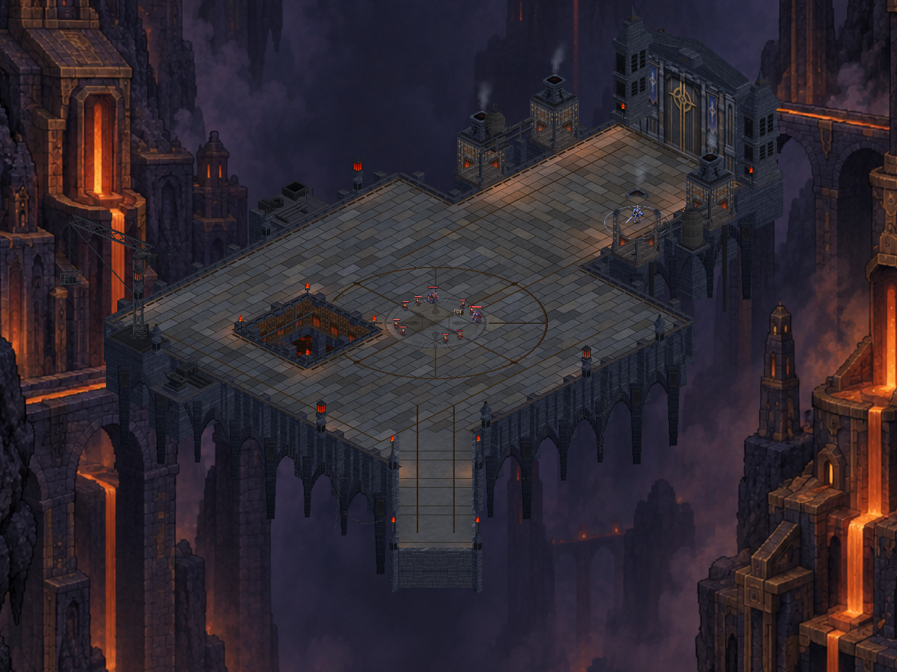
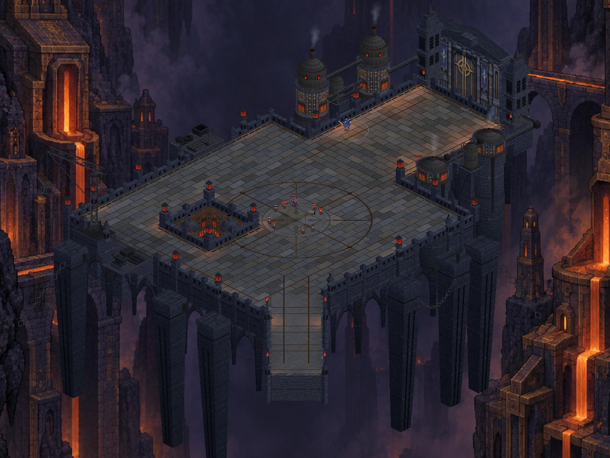
Portrait start
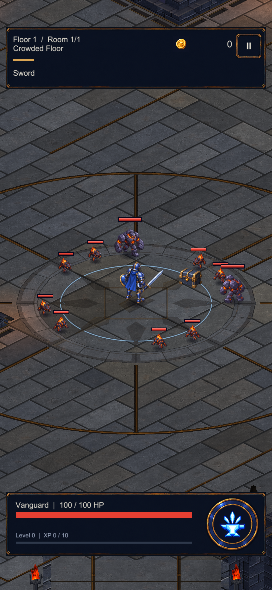
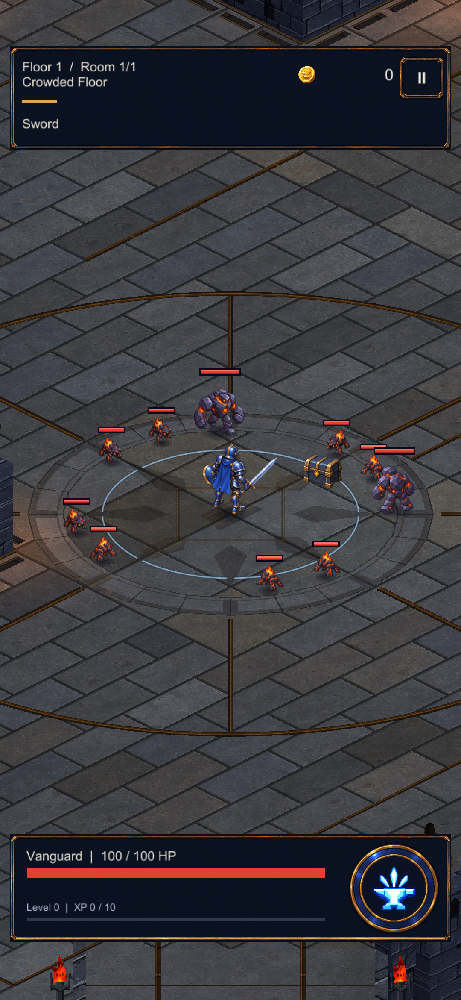
Enemy behind the south boiler
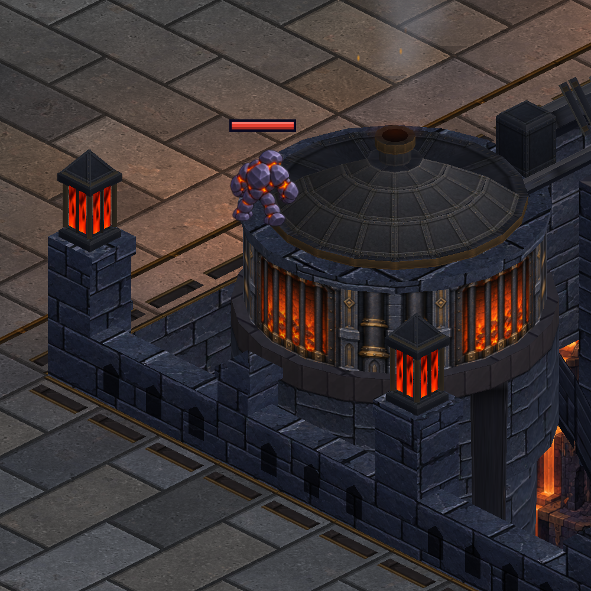
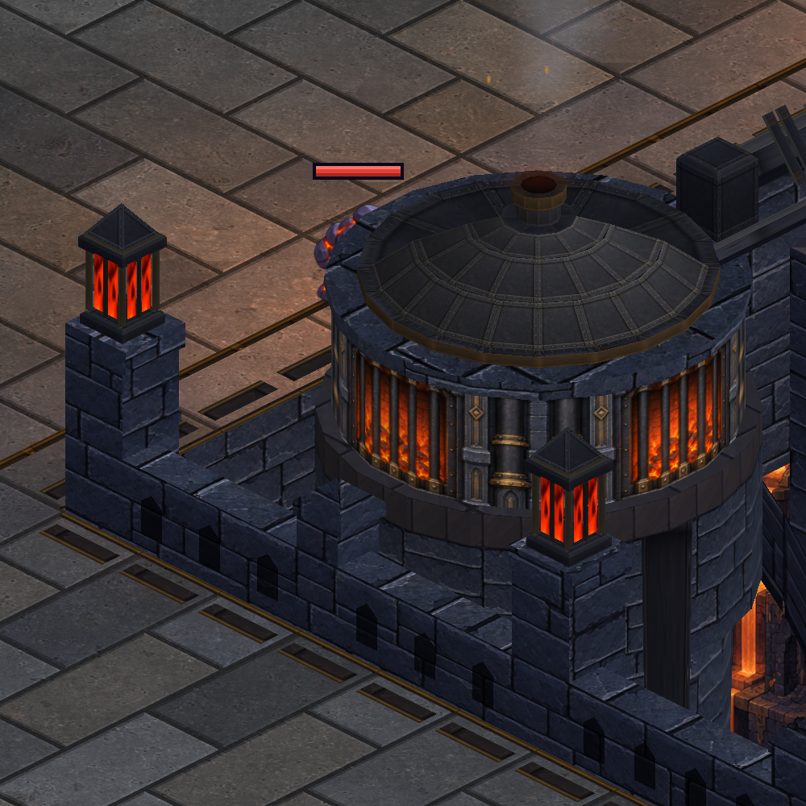
Hero in front of a north boiler

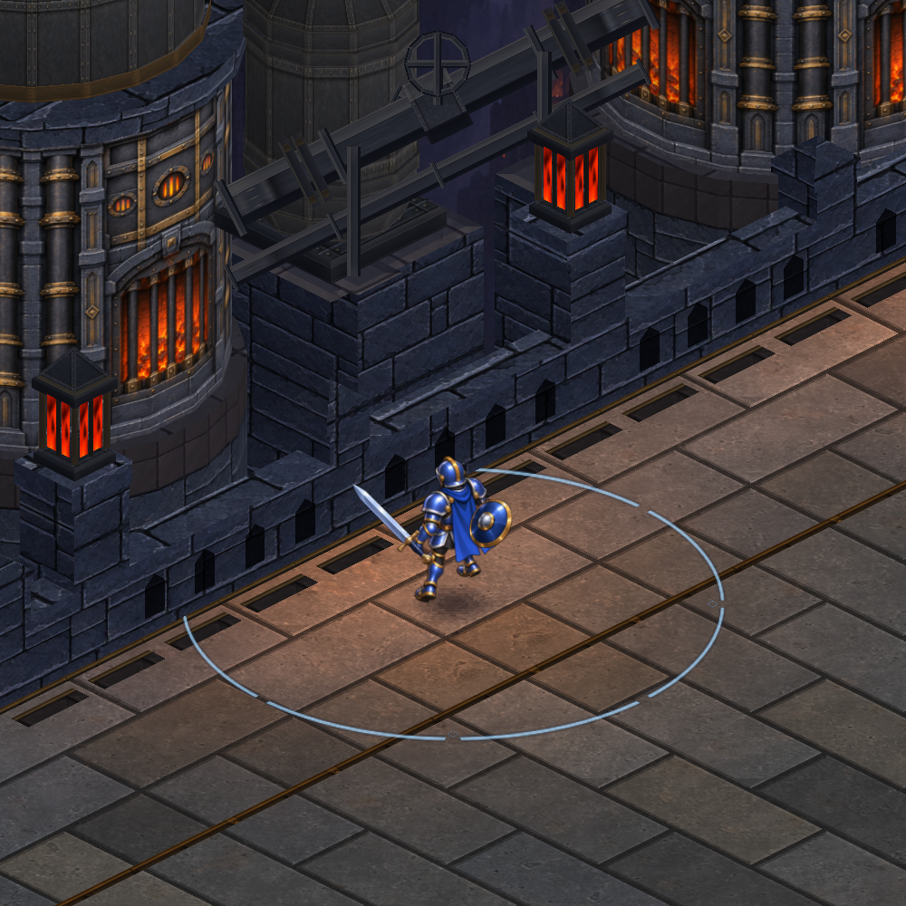
Furnace pit
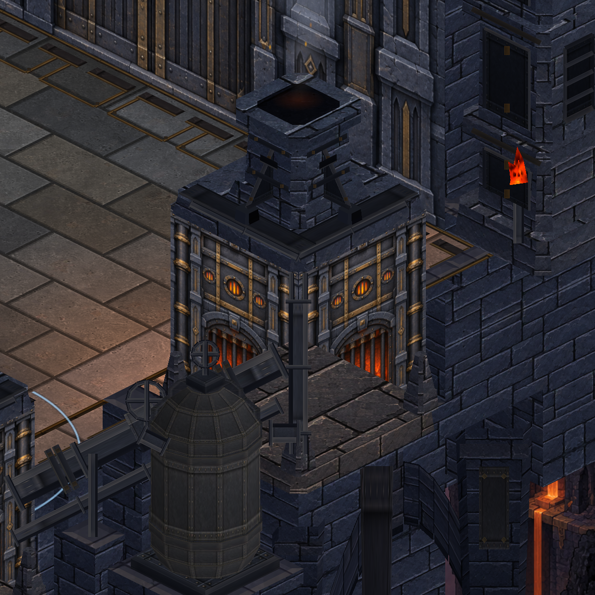
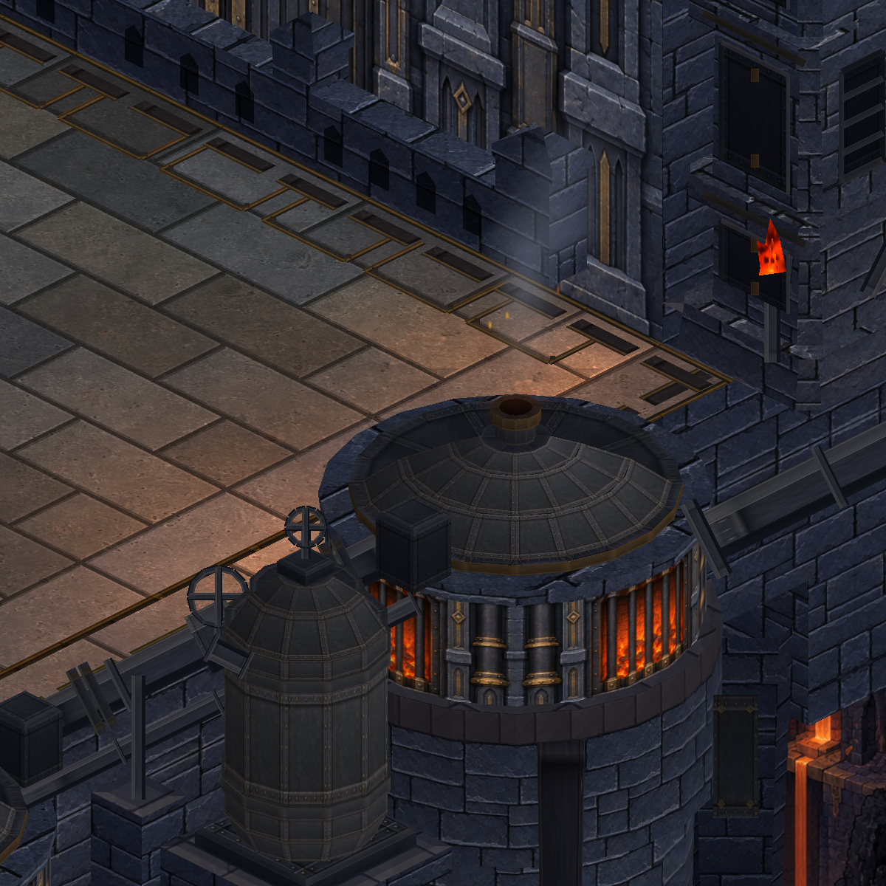
Device (Samsung S23, installed build)
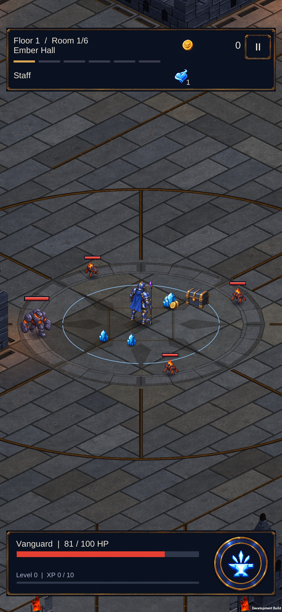
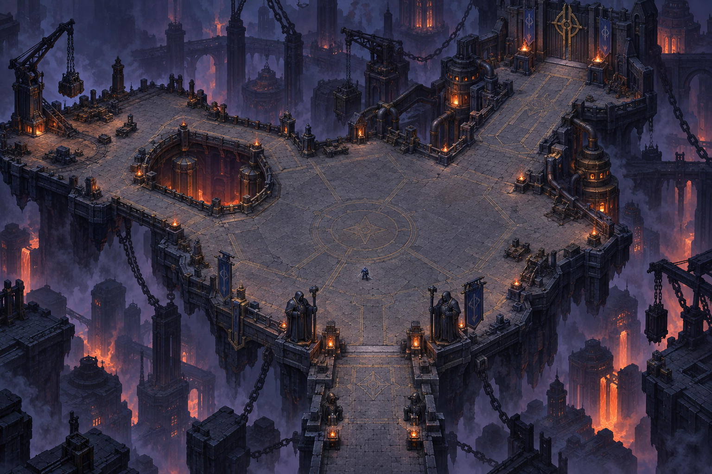